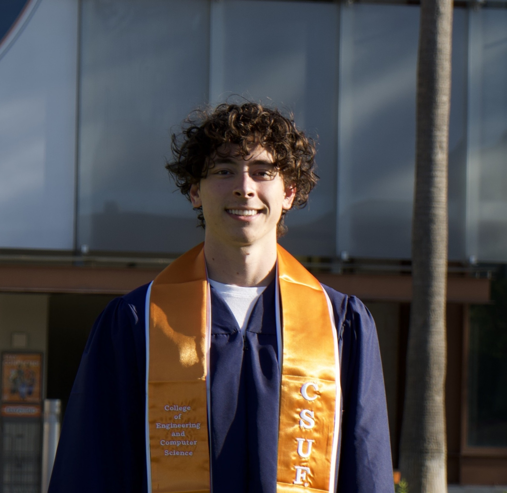

Software Engineer
Dylan Geraci
- based
- Southern California
- focus
- Full-stack systems
- role
- AI SWE @ Internet Brands

~/about
About, Experience, Projects and Contact continue here, unchanged.
Software Engineer

~/about
About, Experience, Projects and Contact continue here, unchanged.